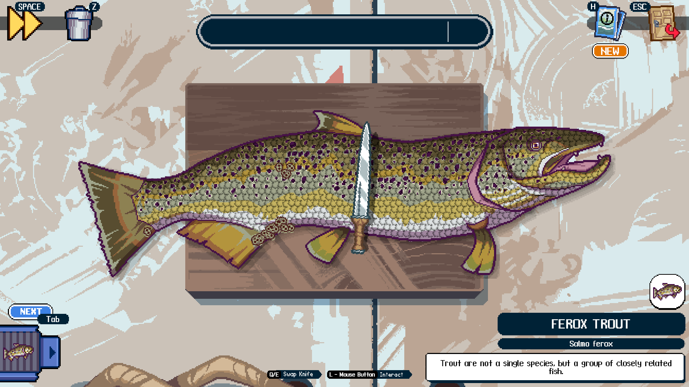

Paho MQTT Chat Interface
Eksperimen pertukaran data real-time menggunakan broker HiveMQ dan JavaScript client untuk komunikasi antar device via web browser.

IoT Architecture & Web Experiments
Eksperimen pertukaran data real-time menggunakan broker HiveMQ dan JavaScript client untuk komunikasi antar device via web browser.

Integrasi hardware mikrokontroler dengan Telegram API guna mengontrol gerakan motor servo dan melakukan monitoring visual jarak jauh.

Proyek eksplorasi media seni rupa alternatif dengan mengaplikasikan gambar ilustrasi manual langsung di atas permukaan kain tekstil.

Catatan studi analisis mengenai mekanisme regenerasi biologis sel pada makhluk hidup dan strukturnya yang adaptif.